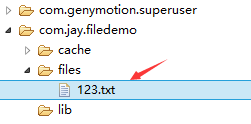
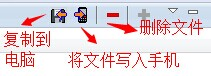
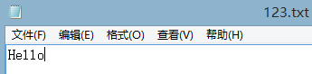
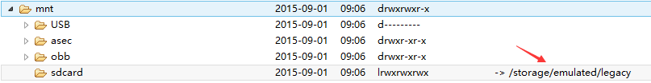
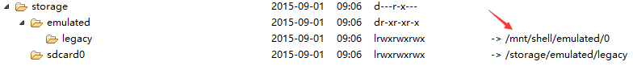
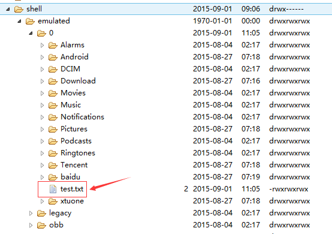
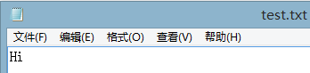
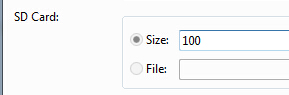
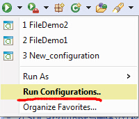

本節の導入：
へへ、このタイトルを見て、一部の読者は「お前の前のFragmentは書き終わったのか？」と聞くかもしれません。うん、書き終わっていません。なぜなら、例を考えるのに少し時間が必要だからです。効率を上げるために、マルチスレッドのように並行してチュートリアルを書くことにしました。これでチュートリアル作成の進捗を速められるかもしれません。今のところ、ちょうど60篇を書きましたが、入門チュートリアルを完成させるにはまだ遠いです。そして前に述べたように、1か月半から2か月以内にこのチュートリアルを完成させたいと思っています。今日はもう9月1日なので、頑張らないといけませんね。では、余談はこれくらいにして、本節ではAndroidのデータ保存とアクセス方法のうちの一つ——ファイル保存と読み書きを紹介します。もちろん、この方法以外にもSharedPreferenceやデータベース、Applicationに保存することもできます。これらは後ほど説明します。では、本節の内容を始めましょう～
1.Androidのファイル操作モード
Javaを学んだ人なら誰でも知っているように、新しいファイルを作成してからデータを書き込むことができます。しかしAndroidは異なります。AndroidはLinuxベースであるため、ファイルを読み書きする際にはファイルの操作モードを追加する必要があります。Androidの操作モードは以下の通りです：

2.ファイルの関連操作方法

3.ファイル読み書きの実装
Androidのファイル読み書きはJavaのファイルI/Oと同じで、プロセスも非常に簡単です。次に簡単な例を書いてみましょう：
実装効果図：

PS:ここではエミュレータを使用しています。筆者のN5はroot化していないため、ファイルの保存ディレクトリを見ることができません。次にDDMSのFile Exploerを開くと、data/data/<パッケージ名>/fileに書き込んだファイルがあることがわかります：

右上隅の対応するアイコンをクリックしてファイルをPCに取り込み、開いて書き込んだ内容を確認できます：


コードの実装：
まずはレイアウトファイル：main_activity.xml
<LinearLayout xmlns:android="http://schemas.android.com/apk/res/android"
xmlns:tools="http://schemas.android.com/tools"
android:id="@+id/LinearLayout1"
android:layout_width="match_parent"
android:layout_height="match_parent"
android:orientation="vertical"
tools:context="com.jay.example.filedemo1.MainActivity">
<TextView
android:layout_width="wrap_content"
android:layout_height="wrap_content"
android:text="@string/nametitle" />
<EditText
android:id="@+id/editname"
android:layout_width="match_parent"
android:layout_height="wrap_content" />
<TextView
android:layout_width="wrap_content"
android:layout_height="wrap_content"
android:text="@string/detailtitle" />
<EditText
android:id="@+id/editdetail"
android:layout_width="match_parent"
android:layout_height="wrap_content"
android:minLines="2" />
<LinearLayout
android:layout_width="fill_parent"
android:layout_height="wrap_content"
android:orientation="horizontal">
<Button
android:id="@+id/btnsave"
android:layout_width="wrap_content"
android:layout_height="wrap_content"
android:text="@string/btnwrite" />
<Button
android:id="@+id/btnclean"
android:layout_width="wrap_content"
android:layout_height="wrap_content"
android:text="@string/btnclean" />
</LinearLayout>
<Button
android:id="@+id/btnread"
android:layout_width="wrap_content"
android:layout_height="wrap_content"
android:text="@string/btnread" />
</LinearLayout>
次にファイルヘルパークラスを書きます：FileHelper.java
/**
* Created by Jay on 2015/9/1 0001.
*/
public class FileHelper {
private Context mContext;
public FileHelper() {
}
public FileHelper(Context mContext) {
super();
this.mContext = mContext;
}
/*
* 这里定义的是一个文件保存的方法，写入到文件中，所以是输出流
* */
public void save(String filename, String filecontent) throws Exception {
//这里我们使用私有模式,创建出来的文件只能被本应用访问,还会覆盖原文件哦
FileOutputStream output = mContext.openFileOutput(filename, Context.MODE_PRIVATE);
output.write(filecontent.getBytes()); //将String字符串以字节流的形式写入到输出流中
output.close(); //关闭输出流
}
/*
* 这里定义的是文件读取的方法
* */
public String read(String filename) throws IOException {
//打开文件输入流
FileInputStream input = mContext.openFileInput(filename);
byte[] temp = new byte[1024];
StringBuilder sb = new StringBuilder("");
int len = 0;
//读取文件内容:
while ((len = input.read(temp)) > 0) {
sb.append(new String(temp, 0, len));
}
//关闭输入流
input.close();
return sb.toString();
}
}
最後はMainActivity.javaここで関連する操作を実行します：
public class MainActivity extends AppCompatActivity implements View.OnClickListener {
private EditText editname;
private EditText editdetail;
private Button btnsave;
private Button btnclean;
private Button btnread;
private Context mContext;
@Override
protected void onCreate(Bundle savedInstanceState) {
super.onCreate(savedInstanceState);
setContentView(R.layout.activity_main);
mContext = getApplicationContext();
bindViews();
}
private void bindViews() {
editdetail = (EditText) findViewById(R.id.editdetail);
editname = (EditText) findViewById(R.id.editname);
btnclean = (Button) findViewById(R.id.btnclean);
btnsave = (Button) findViewById(R.id.btnsave);
btnread = (Button) findViewById(R.id.btnread);
btnclean.setOnClickListener(this);
btnsave.setOnClickListener(this);
btnread.setOnClickListener(this);
}
@Override
public void onClick(View v) {
switch (v.getId()) {
case R.id.btnclean:
editdetail.setText("");
editname.setText("");
break;
case R.id.btnsave:
FileHelper fHelper = new FileHelper(mContext);
String filename = editname.getText().toString();
String filedetail = editdetail.getText().toString();
try {
fHelper.save(filename, filedetail);
Toast.makeText(getApplicationContext(), "数据写入成功", Toast.LENGTH_SHORT).show();
} catch (Exception e) {
e.printStackTrace();
Toast.makeText(getApplicationContext(), "数据写入失败", Toast.LENGTH_SHORT).show();
}
break;
case R.id.btnread:
String detail = "";
FileHelper fHelper2 = new FileHelper(getApplicationContext());
try {
String fname = editname.getText().toString();
detail = fHelper2.read(fname);
} catch (IOException e) {
e.printStackTrace();
}
Toast.makeText(getApplicationContext(), detail, Toast.LENGTH_SHORT).show();
break;
}
}
}
4.SDカード上のファイルの読み取り
読み取りフローチャート：

コード例：
実行効果図：

同様にDDMSのFile Explorerを開きます。古いバージョンのシステムではmmt\sdcard上で直接見つけることができますが、新しいバージョンでは自分で探す必要があるかもしれません。まずこのパスに移動します：

sdcardを開いても何もないので、さらに後ろのこの/storage/emulated/legacyパスの下を探し続けます：

まあ、また別の場所にジャンプしました。引き続き/storage/shell/emilated/0を探します

やはり見つかりました。SDカードに生成したtest.txtです！PCにエクスポートして中身を確認します：

へへ、やはりSDカードの読み書きに成功しました～次にコードがどう書かれているか見てみましょう：
コードの実装：
main_activity.xml:
<LinearLayout xmlns:android="http://schemas.android.com/apk/res/android"
xmlns:tools="http://schemas.android.com/tools"
android:id="@+id/LinearLayout1"
android:layout_width="match_parent"
android:layout_height="match_parent"
android:orientation="vertical"
tools:context="com.jay.example.filedemo2.MainActivity">
<TextView
android:layout_width="wrap_content"
android:layout_height="wrap_content"
android:text="清输入文件名" />
<EditText
android:id="@+id/edittitle"
android:layout_width="match_parent"
android:layout_height="wrap_content"
android:hint="文件名" />
<TextView
android:layout_width="wrap_content"
android:layout_height="wrap_content"
android:text="清输入文件内容" />
<EditText
android:id="@+id/editdetail"
android:layout_width="match_parent"
android:layout_height="wrap_content"
android:hint="文件内容" />
<Button
android:id="@+id/btnsave"
android:layout_width="wrap_content"
android:layout_height="wrap_content"
android:text="保存到SD卡" />
<Button
android:id="@+id/btnclean"
android:layout_width="wrap_content"
android:layout_height="wrap_content"
android:text="清空" />
<Button
android:id="@+id/btnread"
android:layout_width="wrap_content"
android:layout_height="wrap_content"
android:text="读取sd卡中的文件" />
</LinearLayout>
続いてSD操作クラスを書きます： SDFileHelper.java
/**
* Created by Jay on 2015/9/1 0001.
*/
public class SDFileHelper {
private Context context;
public SDFileHelper() {
}
public SDFileHelper(Context context) {
super();
this.context = context;
}
//往SD卡写入文件的方法
public void savaFileToSD(String filename, String filecontent) throws Exception {
//如果手机已插入sd卡,且app具有读写sd卡的权限
if (Environment.getExternalStorageState().equals(Environment.MEDIA_MOUNTED)) {
filename = Environment.getExternalStorageDirectory().getCanonicalPath() + "/" + filename;
//这里就不要用openFileOutput了,那个是往手机内存中写数据的
FileOutputStream output = new FileOutputStream(filename);
output.write(filecontent.getBytes());
//将String字符串以字节流的形式写入到输出流中
output.close();
//关闭输出流
} else Toast.makeText(context, "SD卡不存在或者不可读写", Toast.LENGTH_SHORT).show();
}
//读取SD卡中文件的方法
//定义读取文件的方法:
public String readFromSD(String filename) throws IOException {
StringBuilder sb = new StringBuilder("");
if (Environment.getExternalStorageState().equals(Environment.MEDIA_MOUNTED)) {
filename = Environment.getExternalStorageDirectory().getCanonicalPath() + "/" + filename;
//打开文件输入流
FileInputStream input = new FileInputStream(filename);
byte[] temp = new byte[1024];
int len = 0;
//读取文件内容:
while ((len = input.read(temp)) > 0) {
sb.append(new String(temp, 0, len));
}
//关闭输入流
input.close();
}
return sb.toString();
}
}
続いてMainActivity.java関連ロジックを実装します：
public class MainActivity extends AppCompatActivity implements View.OnClickListener{
private EditText editname;
private EditText editdetail;
private Button btnsave;
private Button btnclean;
private Button btnread;
private Context mContext;
@Override
protected void onCreate(Bundle savedInstanceState) {
super.onCreate(savedInstanceState);
setContentView(R.layout.activity_main);
mContext = getApplicationContext();
bindViews();
}
private void bindViews() {
editname = (EditText) findViewById(R.id.edittitle);
editdetail = (EditText) findViewById(R.id.editdetail);
btnsave = (Button) findViewById(R.id.btnsave);
btnclean = (Button) findViewById(R.id.btnclean);
btnread = (Button) findViewById(R.id.btnread);
btnsave.setOnClickListener(this);
btnclean.setOnClickListener(this);
btnread.setOnClickListener(this);
}
@Override
public void onClick(View v) {
switch (v.getId()){
case R.id.btnclean:
editdetail.setText("");
editname.setText("");
break;
case R.id.btnsave:
String filename = editname.getText().toString();
String filedetail = editdetail.getText().toString();
SDFileHelper sdHelper = new SDFileHelper(mContext);
try
{
sdHelper.savaFileToSD(filename, filedetail);
Toast.makeText(getApplicationContext(), "数据写入成功", Toast.LENGTH_SHORT).show();
}
catch(Exception e){
e.printStackTrace();
Toast.makeText(getApplicationContext(), "数据写入失败", Toast.LENGTH_SHORT).show();
}
break;
case R.id.btnread:
String detail = "";
SDFileHelper sdHelper2 = new SDFileHelper(mContext);
try
{
String filename2 = editname.getText().toString();
detail = sdHelper2.readFromSD(filename2);
}
catch(IOException e){e.printStackTrace();}
Toast.makeText(getApplicationContext(), detail, Toast.LENGTH_SHORT).show();
break;
}
}
}
最後に忘れずにAndroidManifest.xmlSDカードの読み書き権限を書いてくださいね！
<!-- 在SDCard中创建与删除文件权限 --> <uses-permission android:name="android.permission.MOUNT_UNMOUNT_FILESYSTEMS"/> <!-- 往SDCard写入数据权限 --> <uses-permission android:name="android.permission.WRITE_EXTERNAL_STORAGE"/>
5.ネイティブエミュレータのSDカードに関する問題
実機デバッグの場合は通常問題ありませんが、ネイティブエミュレータの場合は問題が多くあります。前述のEnvironment.getExternalStorageState().equals(Environment.MEDIA_MOUNTED)を使用した際に、常にfalseが返される可能性があります。つまりSDカードが存在しないということで、これが主な問題です。現在の新しいバージョンのSDKでは、AVDを作成する際に同時にSDカードのストレージ領域を申請します。

旧バージョンのSDKやその他の理由により、SDカードを手動で関連付ける必要があるかもしれません。設定は以下の通りです：
①作成済みのAVDイメージのパスを見つけます：
AVDインターフェースをクリックして開き、detailをクリックして、AVDイメージのディレクトリを確認します
②AVDイメージがあるパスに移動し、sdcard.imgのパスをコピーします：
例：私のもの:-sdcard C:\Users\Administrator.android\avd\Jay4.2.avd\sdcard.img③続いてクリックします

次の画面に移動します：
最後にapplyをクリックして、それからRunを実行すればOKです！
6.rawフォルダとassetsフォルダにあるファイルの読み取り
この2つのフォルダには皆さん馴染みがあると思います。自分のファイルがバイナリファイルにコンパイルされたくない場合は、ファイルをこの2つのディレクトリに置くことができます。両者の違いは以下の通りです：
- res/raw：ファイルはR.javaファイルにマッピングされ、アクセスするときはリソースIDを直接使用してアクセスできます。また、ディレクトリ構造を持つことはできません。つまり、フォルダを作成することはできません。
- assets：R.javaファイルにはマッピングされず、AssetManagerを介してアクセスします。ディレクトリ構造を持つことができ、つまり自分でフォルダを作成できます。
ファイルリソースの読み取り：
res/raw：
InputStream is =getResources().openRawResource(R.raw.filename);
assets：
AssetManager am = getAssets();
InputStream is = am.open("filename");
コードのダウンロード：
- FileDemo.zip：FileDemo.zipをダウンロード
- FileDemo2.zip：FileDemo2.zipをダウンロード
本節のまとめ：
はい、Androidのデータ保存とアクセスの第1節——ファイルの読み書きはここまでです。この記事を学習する中で何か問題に遭遇した場合、または何か不備があると思われる場合は、ぜひご指摘ください。大変感謝します。ありがとうございます～